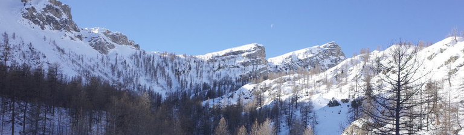

My name is François Desvallées. I am a woodworker, and amateur astronomer.
This site describes my projects related to astronomy diagrams and maps, mostly inspired by Guy Ottewell's wonderful astronomy yearbooks, published until 2016. (Guy now maintains an excellent blog ).
The site is built with Armin Ronacher's Lektor content management system and the Spectre CSS framework.
All the projects are written in JavaScript (ECMAScript 6). Older browsers might not support all the features.
Much of the code is borrowed from Peter Hayes, who used to maintain a page of ephemerides, implementing the algorithms from the book by Jean Meeus "Astronomical Algorithms".
The graphics use Jürg Lehni's paper.js ("The Swiss Army Knife of Vector Graphics Scripting"). Paper.js draws to the HTML5 canvas, and provides a simple way of exporting to SVG.
Other libraries include Mike Bostock's d3.js and Ricardo Cabello's three.js
Since the JavaScript code is in the HTML pages, you can view it by selecting the "inspect" function in your browser.
You can contact me through github